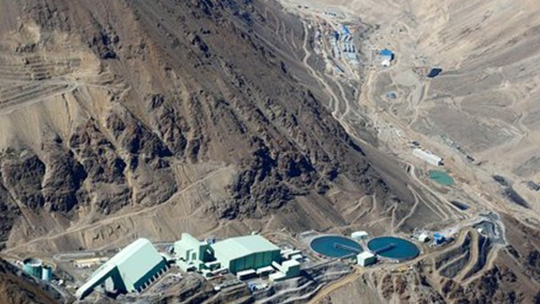

Pipeline Profiler Robot
 I served as the lead electrical engineer on a pipeline profiling robot to inspect the inside of variable diameter pipes used by Anglo American Copper in the Chilean Mountains to transport ore-slurry in mining operations. I designed the high-level electrical system and iterated over requirements with our sponsors and other team leads to ensure all stakeholder's needs were met. The requirements dictated that the system operate within an extreme environment (e.g. high temperature, etc) with little room for error, thus requiring redundant systems.
I designed the motor controller interfaces using off-the-shelf motor controlers, the robot's redudant power architecture, and the robot's motherboard which carried NREC's in-house robot computer. The electronics interfaced with a variety of sensors and implemented both analog and digital circuit design techniques. I assembled, modified, and tested all of the system's prototype electronics. The PCBs I designed for this project varied from simple, square two-layer boards to obscurely-shaped, multi-layer, heavy-copper boards. Furthermore, I designed the robot's cable harnesses and the electrical test plans for some of the mission-critical systems. I worked on this project from inception to delivery and, according to our sponsors, the robot outperformed expectations.
Further Information
I worked on this project while I was an electrical engineer at Carnegie Mellon University's National Robotics Engineering Center. NREC is known for its close collaborations with government and industry sponsors to apply robotics technologies to different sectors. Here's the NREC press release from when we were awarded the project.
Skills and Tools Used
- Schematic Design
- Altium Designer
- Cable Harness Design
- Multi-layer PCB Design
- Rugged Systems Design
- Project Managment